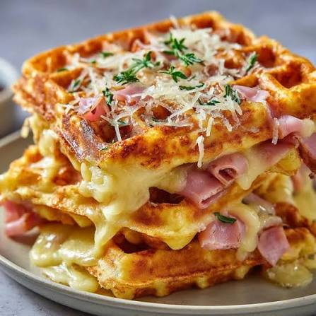

Gaufres jambon emmental
Ingrédients
×
- 2 oeufs
- 25 cl de lait
- 75 g de beurre fondu
- sel et poivre
- 100 g de fromage râpé
- 200 g de farine
- 0.5 c. à c. de levure chimique
- 100 g de jambon coupé en dés

Préparation
Étape 1
Battre 2 oeufs, ajouter 25 cl de lait et 75 g de beurre fondu, puis mélanger. Assaisonner de sel et poivre.
Étape 2
Incorporer 100 g de fromage râpé, puis 200 g de farine et 0.5 c. à c. de levure chimique. Battre jusqu’à obtenir une pâte homogène.
Étape 3
Ajouter 100 g de jambon coupé en dés et mélanger délicatement.
Étape 4
Chauffer le gaufrier et le graisser légèrement. Cuire les gaufres une louche de pâte à la fois.
Conseils
Servir chaud et croustillant.
Résumé
2 oeufs
25 cl de lait
75 g de beurre fondu
sel et poivre
Battre mélanger
100 g de fromage râpé
200 g de farine
0.5 c. à c. de levure chimique
Incorporer Battre
100 g de jambon coupé en dés
Ajouter
Chauffer Cuire